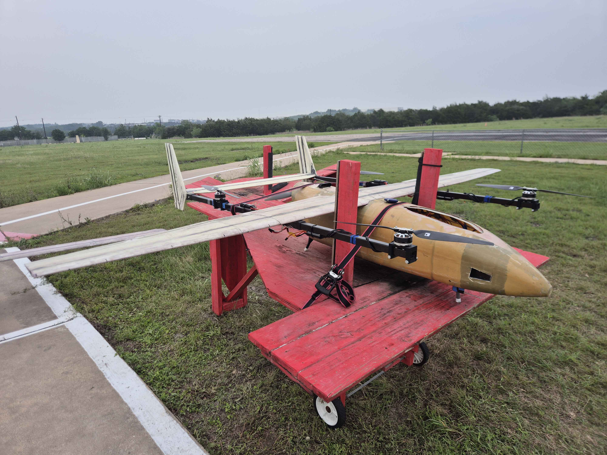

Compressible flow, shock interactions, aerodynamic analysis.
AEROSPACE // HIGH-SPEED FLOW // SPACE SYSTEMS
ENGINEERING AT THE EDGE OF PHYSICS.
Aerospace engineer focused on aerodynamics, CFD, experimental testing, flight mechanics, structural design, and the systems that carry vehicles from atmosphere to orbit.
FOCUS
AERODYNAMICS
TOOLS
CFD + TEST
MISSION
DESIGN / TEST / FLY
SCROLL TO EXPLORE
ATMOSPHERIC FLIGHT
COMPUTATIONAL AERODYNAMICS
EXPERIMENTAL TESTING
SPACE SYSTEMS
NUMERICAL METHODS
01
PROFILE
ENGINEERING ACROSS REGIMES.
I’m an aerospace engineer interested in how aerodynamic theory, computational models, structural design, and experimental evidence come together in real flight vehicles.
My experience spans subsonic wind-tunnel testing, high-speed aerodynamics, CFD, aircraft design, flight testing, numerical methods, and technical programming. I enjoy turning engineering theory into designs that can be analyzed, built, tested, and improved.
SEE SELECTED WORK →Aircraft integration, testing, data review, design validation.
Wind tunnels, pressure measurements, lift and drag analysis.
Dynamics, controls integration, mission-oriented engineering design.
02
SELECTED ENGINEERING MISSIONS
PROJECTS & RESEARCH.
VTOL // WILDFIRE MISSION

WILDFIRE VTOL AIRCRAFT
Aerodynamics and structural design for a mission-driven VTOL aircraft, including wing and empennage design, performance analysis, controls integration, manufacturing support, load testing, and flight testing.
MACH 3 // DOUBLE RAMP
MACH 3 DOUBLE-RAMP CFD
OpenFOAM analysis of compressible flow over double-ramp geometries, examining attached and detached shocks, pressure behavior, and consistency with oblique-shock theory.
WIND TUNNEL // CLARK Y-14
VORTEX GENERATOR RESEARCH
Experimental study of vortex generators on a Clark Y-14 airfoil using pressure measurements and force data to study lift, drag, and pressure distributions across angle of attack.
03
ENGINEERING STACK
FLIGHT SYSTEMS & TOOLS.
ANALYSIS
- Computational Fluid Dynamics
- Compressible & Incompressible Flow
- Aerodynamic Performance
- Numerical Methods
- Flight Mechanics
SOFTWARE
- MATLAB
- Python
- C / C++
- OpenFOAM
- XFLR5
DESIGN & TEST
- CAD & Mechanical Design
- Wind-Tunnel Testing
- Flight Testing
- Structures & Load Testing
- Technical Documentation
OPEN CHANNEL // CONTACT
LET’S ENGINEER
LET’S ENGINEER
WHAT FLIES NEXT.
Interested in aerospace engineering, aerodynamics, CFD, flight testing, mechanical design, or technical collaboration? Let’s connect.